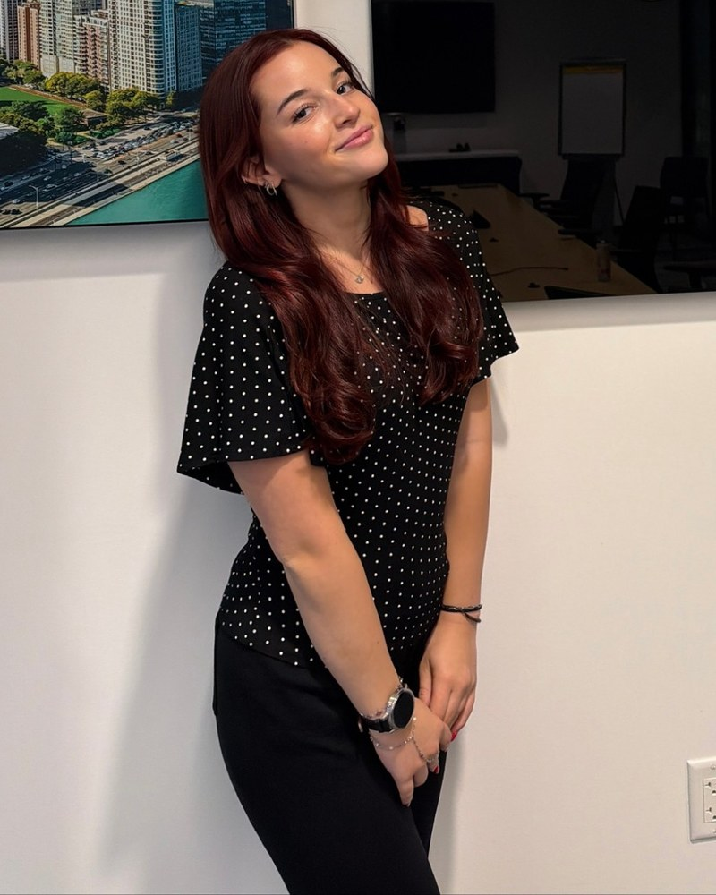

03 · Culture Lab
Culture
Lab
Writing about pop culture and the media I follow.
I am by no means a writer in any sense. I am just trying to make that creative muscle stronger and find a way to articulate and express my current thoughts and takes on pop culture.

How I think about what I consume
-
I think for myself first.
I try not to immediately agree with something or get emotional about it. I take a moment to form my own opinion.
-
I check the facts.
I look at where something came from and whether it holds up before I repeat it or react to it.
-
I read critically.
I use digital literacy, reading comprehension, and general literacy to understand what I'm actually looking at.
-
I reflect on what it means.
I think about what it means to me, and how it might change an industry, a sector, or a community going forward.
I want to be using my brain instead of just mindlessly consuming. There's no shame in mindless scrolling. I just like to keep a balance.
Where I look
My information diet
Substack has been a great outlet for my reading itch when I have limited time. I'm a pretty busy person who is completely obsessed with learning and keeping up with what's going on. I try to keep my information diet varied, with topics ranging from history, current events, nutrition, pop culture, comedy, health and wellness, and creativity, just to name a few.
I also love a good deep dive into something seemingly not that deep.
I need to know what's going on, what has been going on, and what might be going on next.
Reading
Feed Me by Emily Sundberg · The Price of Beauty · 1440
Watching
Mina Le · Jordan Theresa · Good Work · Tiffany Ferg · Eddy Burback
Listening
Sad Boyz · Voice Notes with Jordan Theresa · Kayla Says
The full listOpen
Substacks
- Feed MeEmily Sundberg
- Your Brain on Money
- Cole Hastings
- Grocery Girl
- The Price of Beauty
- Plum Pits
Journalism & news
- 1440
- Spitfire NewsKat
- The Washington Post
- AM Quickie
- Taylor Lorenz
- Steven Asarch
YouTube
- Mina Le
- Jordan Theresa
- Cole Hastings
- Matt Bernstein
- Keltie O'Connor
- Elle Literacy
- Good Work
- Kurtis Conner
- Shanspeare
- Tiffany Ferg
- Girl on Film
- Eddy Burback
Podcasts
- Sad Boyz
- Voice Notes with Jordan Theresa
- Kayla Says
Shows
- Adults
- The Office
- The Boys
- Next Gen NYC
- The Real Housewives of Salt Lake City
- Dancing with the Stars
Movies
- Project Hail Mary
- The Matrix
- Star Wars
- Obsession
- The Interview
- Gone Girl
- Fight Club
- You Can See EverythingPossibly my favorite documentary of all time. My take is in the Current rabbit hole below.
- Up next:Primetime with Robert Pattinson.
Why are we still fascinated by Elizabeth Holmes?
I could probably watch a documentary about the making of this documentary.
Fraud alone doesn't explain why Holmes remains culturally interesting years later. I'm interested in the collision of founder mythology, media storytelling, gender, Silicon Valley culture, aesthetics, and the public's fascination with spectacular failure.
Questions I'm thinking about
- Why do certain scandals become pop culture?
- How much did Holmes' personal branding contribute to Theranos' credibility?
- Why does the story keep producing documentaries, books, podcasts, and online discussion?
Read my take on You Can See EverythingOpen
I had Elizabeth Holmes in my Culture Lab before I even knew there was going to be a movie about her. My roommates and I had started watching The Dropout, and I immediately got pulled back into the Theranos story. I already knew the broad facts, but I became way more interested in Holmes herself and in why people are still so fascinated by her years later.
That was the context I brought into You Can See Everything. I knew the Theranos story, but I knew almost nothing about the film itself. I did not know what direction it was going to take, I did not know much about Billy Evans, and I definitely did not expect Nathan Fielder’s role to become such a major part of the story. I think going in that blind made the experience better because the movie kept becoming something different from what I expected.
One of the most interesting things about the film is that I think Nathan Fielder is easy to underestimate. At first, it is tempting to see him as the observer who is slowly being manipulated by Elizabeth, but I do not think that fully explains what is happening. Nathan is also extremely calculated. He knows how to make people uncomfortable, how to use awkwardness to get information, and how to create situations where people reveal more than they probably intended to. Elizabeth, Billy, and Nathan are all trying to control the situation in different ways, and all three have their own reasons for doing it.
That is part of what makes the film so psychologically interesting. There is not really one person standing outside of the situation with total objectivity. Everyone is shaping the story while also being shaped by the other people in it.
Still, Nathan’s relationship with Elizabeth changes in a way that is hard to ignore. At the beginning, he seems very aware of the need to maintain boundaries. As the film goes on, that distance becomes much less clear, and by the end he seems far more emotionally involved in trying to understand her. The question of whether that closeness is affecting his judgment feels almost absent until Amanda Seyfried brings it back into focus.
Her role became even more interesting to me because she is such an outsider to the situation. She has not spent all of this time inside Elizabeth and Billy’s world, so she is able to look at Nathan and question something that he seems to have stopped questioning himself. When she asks whether he is protecting Elizabeth, it almost feels like she breaks whatever spell the relationship has created.
I also found it really interesting that Amanda’s involvement was barely part of the way the movie was presented before release. At least from what I had seen, she was not being pushed as one of the main reasons to watch the film, which made her eventual role feel much more surprising. She enters relatively late but ends up changing how I understood everything that came before her.
The film also surprised me because of what it chooses not to focus on. It is not really a documentary about the mechanics of Theranos. There is very little emphasis on the money, the medical technology, or a detailed reconstruction of exactly how the fraud worked. Instead, most of the movie is just people talking to each other.
And somehow that made it more intense.
You are watching relationships shift in real time. You are watching people test one another, perform for one another, and try to figure out who has control. The factual Theranos story is always sitting in the background, but the movie is much more interested in what these people are like when they are in a room together.
Elizabeth is especially interesting because she seems to move constantly between two completely different versions of herself. She can present herself as incredibly intelligent, composed, strategic, and fully aware of what is happening around her. Then, almost immediately, she can shift into this much more childlike and naive version of herself.
That contrast felt very deliberate.
The public image of Elizabeth Holmes that I was familiar with before this movie was built around authority. She was the young genius founder, the person who supposedly knew more than everyone else in the room, the woman with the deep voice and black turtleneck who was going to change healthcare.
In this film, she often seems to do the opposite. She presents herself as vulnerable, confused, misunderstood, or in need of protection.
I kept noticing how many people around her seemed to want to take care of her. She can appear almost like a wounded baby bird that everyone else is supposed to protect or fix, which is such a strange contrast with the image she spent years constructing.
And yes, not to be painfully Gen Z about it, but the dichotomy is fascinating.
The same contradiction shows up in the way she talks about money and power. She can portray herself as someone who does not care about those things, while consistently surrounding herself with people who very clearly do. Billy becomes especially important here because his personality can make Elizabeth seem comparatively calm or vulnerable. Whether that is intentional on her part or simply the dynamic between them is impossible to know, but the contrast changes how the audience sees her.
That is one of the reasons I do not think the film can be reduced to “Elizabeth manipulates Nathan.” Everyone is pulling on everyone else.
Elizabeth controls how vulnerable she appears. Billy tries to control Elizabeth and the world around them in his own way. Nathan controls the filmmaking process and the situations they are placed in. Even Amanda, despite being the outsider, changes the direction of the story the moment she enters it.
The film becomes a constant struggle over who gets to define reality.
That is also why the title You Can See Everything works so well. The movie gives Nathan, and by extension the audience, an enormous amount of access to Elizabeth’s life. We see her at home, we see her relationship with Billy, and we see moments that feel much more intimate than the public usually gets from someone like her. But by the end, I did not feel like I understood her more. If anything, I felt less certain.
A Substack essay I read after the movie described the extreme close-ups as being similar to standing too close to a mural. You can see every tiny detail, but you lose the larger image. That idea really resonated with me because it describes what I think the documentary is doing. Nathan is able to see more and more of Elizabeth, but that proximity starts to create its own kind of blind spot.
It also connected to something I have been getting much more interested in lately, which is the ethics of journalism and reporting. There is a strange tension in journalism where access is necessary, but access can also complicate the work. A reporter or filmmaker needs people to trust them enough to speak openly, but the same relationship that creates that access can make it harder to stay detached.
That is also why I have been thinking about Primetime. To me, it raises a different version of the same ethical problem. In You Can See Everything, the danger is becoming too close to the subject and allowing that closeness to affect your judgment. In the real story behind Primetime, the issue is what can happen when someone uses the trust and access that come with being a reporter for their own benefit.
The details are very different, but both stories made me think about how much power comes with being the person who gets to tell someone else’s story. Access creates an enormous amount of responsibility, especially when the audience assumes that the person telling the story is acting in good faith.
The other reason the documentary worked so well for me is that it never reduced the story into a clean good-guy, bad-guy structure. Elizabeth Holmes did terrible things, but the movie does not pretend that everyone around her is simple either. Billy becomes much more important than I expected, Nathan becomes part of the story himself, and the filmmakers are forced to confront their own relationship to the people they are documenting.
I tend to like stories that become more complicated the deeper you go into them because real situations usually do not end with one perfectly innocent person, one perfectly guilty person, and a neat resolution. People want stories to work like that because it is easier. Reality usually does not.
That is probably also why Holmes remains so interesting to me. Her story involves business, branding, ambition, media, persuasion, power, image, and the way people turn public figures into characters. The black turtleneck, the voice, the Steve Jobs comparisons, and the mythology around her were all part of what made Theranos believable to so many people in the first place.
Even after the company collapsed, the image of Elizabeth Holmes never really disappeared.
I do not think You Can See Everything explains her, and I do not think that is a failure of the film. I think that is part of what made it so good. It made the story more complicated rather than less complicated, and it left me thinking about Elizabeth, Billy, Nathan, Amanda, journalism ethics, objectivity, manipulation, and what happens when everyone involved is trying to tell their own version of the truth.
Two of my favorite think pieces on the movie were Nicky Reardon’s YouTube video and Coco Mocoe’s Substack article. They helped me think a lot deeper into the discourse.
Field notes · 01
Why I miss macro‑moments.
There is something amazing about watching Dancing with the Stars, and it's only partly the dancing.
I miss macro-moments: the ones everyone is talking about. They're hard to come by now. We live in a culture of a million different niches and a million versions of the For You page, where my feed and your feed overlap only by accident. Compare that to when there were really only five channels and everyone my age was watching the same one. There wasn't much variety in what we watched, and that was the point. The next day, everyone could talk about it.
Shows like DWTS and Love Island build a small microcosm of what it used to feel like to have a collective moment: something that lasts longer than five seconds, that everyone can speak about and share in.
That's why I'm so impressed by the moments shows like these create.
I also love watching the advertising moments inside them. Think about the amount of work the brand partnerships teams at all these different companies put in for a few small moments on television, and the planning that goes into a sixty-minute episode that happens every single week.
Hot take
I'm not convinced microdramas are the future of TV.
My hot take is that the current microdrama gold rush is going to cool off. I am not saying the format disappears. I am saying Hollywood may be treating it like the next dominant form of entertainment when it fits a narrower role.
Figures from Omdia, as reported in its February 2026 analysis and its October 2025 forecast.
Read the full takeOpen
I feel like I cannot open TikTok or Snapchat anymore without being advertised some kind of vertical drama. Sometimes it is very obviously AI-generated or intentionally ridiculous, usually involving a billionaire, secret pregnancy, cheating husband, werewolf, or some combination of all four. Other times, though, I have been genuinely surprised by the production quality. The acting is decent, the cinematography looks good, and for thirty seconds I find myself thinking that maybe I would actually watch this.
Apparently, I am far from the only person being targeted. Microdramas, which are usually scripted vertical series broken into episodes lasting somewhere around one or two minutes, have become a massive business. Omdia estimates the global market will reach $14 billion by the end of 2026, with the U.S. accounting for roughly $1.5 billion.
Now traditional entertainment companies want in. Bravo recently announced its first original scripted microdrama, Charmed by a Southern Monster. What really caught my attention was the casting: Craig Conover from Southern Charm is starring in it. Maybe I have simply missed another example, but that was the first time I personally saw someone with an existing reality-TV following being used to pull a traditional Bravo audience into this format.
My hot take is that I still think the current microdrama gold rush is going to cool off.
I do not mean that vertical storytelling is going to disappear, or that there is no audience for it. Clearly there is. I am more skeptical of the idea that this represents some permanent transformation where people suddenly prefer watching forty-three one-minute episodes on their phones to watching an actual television episode or movie.
Part of my skepticism comes from actually trying it. One of the ads I was served looked noticeably better than most of the others, and I was interested enough to download the app. Then I realized the story had been divided into something like forty-three minute-long episodes and I would eventually have to pay to keep watching. I immediately lost interest.
That experience is not really an accident. It is the business model. Many of these apps give viewers several episodes for free before putting the rest behind a paywall, and subscriptions can run as high as roughly $20 per week.
The model obviously works on some people, but I wonder how much it limits the format's ability to create the kind of sustained cultural investment that television and movies can generate. I personally do not know anyone waiting for episode 43 of a vertical drama to drop tomorrow. That is anecdotal and I am obviously biased, but fandom matters. People organize watch parties around shows, make edits, spend hours arguing about characters on Reddit, buy merchandise and continue talking about movies decades after they were released. I have not really seen that same ecosystem develop around microdramas yet.
That distinction matters because entertainment companies are not only competing for views. They are competing for attachment.
I absolutely have the attention span to watch TikToks at 2x speed and get annoyed when somebody takes thirty seconds to get to the point. I will also happily sit through a movie that takes its time if I feel like the payoff is worth it. The Shining would obviously be a completely different movie if every scene had been designed around making sure I did not swipe away within three seconds.
Those two behaviors are not actually contradictory. Sometimes I want information immediately. Sometimes I want to be completely absorbed in a story for two hours. The existence of one does not eliminate the desire for the other.
I think the entertainment industry may be confusing where people discover stories with how people ultimately want to experience them.
Short-form is unbelievably good at discovery. It can introduce a character, establish a conflict and make somebody curious almost immediately. TikTok, Reels and Shorts have essentially become trailers that people voluntarily watch. A one-minute piece of content that brings someone back into the Bravo ecosystem, makes them care about a personality, or eventually sends them toward a longer show could be extremely valuable.
What I am less convinced by is the idea that the current standalone microdrama model is where all of this ends.
I could absolutely be wrong. In fact, the revenue numbers right now are much better evidence against my argument than for it. ReelShort users are also spending an average of more than half an hour per day inside the app, which is more mobile time per user than Netflix, Disney+ or Prime Video in the same analysis. That is not something I can dismiss just because the format is not personally appealing to me.
Microdramas have built an intensely engaged audience. That does not necessarily mean they have built a mass replacement for television.
My guess is that the format survives, but the hype around it changes. Vertical storytelling probably becomes one more piece of the entertainment ecosystem: a way to test ideas cheaply, introduce new actors, extend existing franchises, reach people through social media and give fans something to consume between larger releases. Some dedicated apps will probably become lasting businesses too.
I am just not ready to believe that because people will watch sixty seconds of dramatic chaos while waiting in line for coffee, they suddenly stopped wanting stories that take their time.
Sources: Omdia, microdramas overtake streamers on mobile engagement. TheWrap, Craig Conover to lead Bravo's first scripted microdrama. SCMP, Disney and Fox are investing in micro dramas.
Get in touch
If you're hiring for a strategy, insights, or analyst role, I'd be glad to talk.
Get in touch